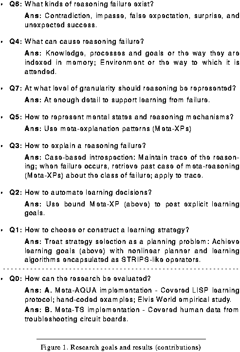

Table of Contents
Table of Contents
 Previous Chapter
Previous Chapter
Table of Contents
Previous Chapter
I know I see what I know
that I know I think
and that I don't know. I know what I see.
But I forget. But sometimes
I forget.
I see that I am blind
and I see the blinding light And This is the Way
in everything, It should be.
but I forget. At the end of every forget
I remember.
_Lonny Brown (cited in Ram Das, 1971), p. 98.
Many dissertations are written from an extremely narrow and focussed perspective; this one has attempted to start with a narrow computational problem, but then to examine the problem from a broader cognitive science perspective. We examined topics ranging across a wide spectrum, from representations to algorithms and from historical context to implementation. The attempt to be general in our theory of introspection has dictated that the research at least consider comprehension, problem solving, and learning in some depth. We take up again these three processes in an extended epilogue to come, but first, we review what this work has accomplished so far. The goal of this chapter is to briefly contextualize the contributions and major points by which the reader might remember this research.
The thesis contains four major parts. Part One introduced and motivated the problem of constructing a learning strategy. Within it Chapter I defined the main problem and outlined its solution. This chapter introduced the issues addressed by all subsequent material. Chapter II then explained the distinction between a process theory and a content theory of cognition. Following these preliminaries, Part Two developed a content theory of learning and introspection (Chapter III gave the content and Chapter IV provided the representation for the content); whereas, Part Three detailed the corresponding process theory (Chapter V set it up theoretically and then Chapters VI and VII provided an extended example that made the process theory concrete). Part Four finally inventoried the implementation of the theory (Chapter VIII) and evaluated the theory using the implementation (Chapter IX). Part Four concludes with future (Chapter X) and related (Chapter XI) research and a final closing (Chapter XII).
Section 12.1 explicitly lists the main points of this thesis. The subsequent four sections (12.2-12.5), will expand on each of the four main parts to the dissertation, briefly reviewing the main contributions and putting them into context for the reader. Section 12.6 finishes by reiterating the major contributions of the thesis.
To be as explicit as possible, we enumerate our most important claims here and follow with a brief summary of the points in context of an outline of the dissertation (within the summary the points are marked likewise and printed in italics). If the casual reader takes from this dissertation nothing but a litany of slogans, then the following list represents the thesis in convenient sound-bite form, ordered by decreasing importance. I challenge the reader to consider them at leisure, however, and if interested, to search the appropriate chapter number (in parentheses) for the source of these claims in order to independently determine their reasonableness.
Chapter I set up the basic arguments used by the thesis in establishing a theory of introspective multistrategy learning. It provided a motivation for why an introspective approach to learning is effective, especially when integrating disparate learning methods. It then narrowed the thesis focus to the learning-strategy construction problem; that is, it posed the question "How can an intelligent system select and order learning methods given a performance failure?" (1)The question of learning-strategy construction is important because if ignored, a system that conjunctively calls learning algorithms can incur negative interactions.
The chapter placed this question in a machine learning context and asked what significance it has for models of human learning. The chapter outlined a solution to the strategy construction problem and argued that to answer the question a number of interrelated subquestions must be answered first. Figure 100 lists brief answers for each of the subquestions in the order they were entertained by this document.(1) The questions represent the major research problems considered and the answers represent the specific contributions.
 Figure 100. Research goals and results (contributions)
Given the introduction to IML theory and the Meta-AQUA implementation in Chapter I, Chapter II provided two examples that provided tangible material to illustrate many of the abstract arguments put forward in subsequent chapters. We then explained the differences between content and process theories and related the distinction to the performance domain of story understanding. A content theory specifies the salient features for representing knowledge in a domain; whereas, a process theory specifies the transformations on that knowledge. (8)In a computational theory of introspective learning, a special relation exists between the content and process theories because the content theory must represent what the process theory describes (i.e., process failures).
Four of the eight research questions listed in Figure 100 address issues of representation and content. Chapter III tackled two of them while Chapter IV handled the remainder. The purpose of Chapter III was to describe what needs to be represented (i.e., the content). Because the task of learning from failure involves mapping from failure symptom to failure cause, the representational focus is not on the content of some task domain in the world, rather the theory must represent the second-order learning domain of reasoning failure. Thus, this chapter provided a simplified but general model of reasoning from which failure can be analyzed. The question of what kinds of failure exist (Q6) can then be answered by exhaustively deriving the implications of the model.
(7)Failure types should be derived from a model of the reasoning process rather than by generalization from the researcher's intuitive list of all likely failures. Our analysis of the reasoning model showed that failure consists of contradictions, impasses, false expectations, surprises, and unexpected successes. Given these failure symptoms, the remainder of the chapter analyzed the kinds reasoning faults that can cause such symptoms. We argued that knowledge, goals, processes and the environment all contribute to failure. For each of these categories, we additionally showed that each can have a selection or organizational component. This then determines a matrix of causal factors that explain reasoning failure (Q4).
Chapter IV provided specific knowledge structures that declaratively represent the content of reasoning failures described in the previous chapter. To represent failures, the details of mental events and mental states are captured just as standard AI knowledge representations capture the details of physical events and states. The most important details are the causal relationship between chains of reasoning, and thus not all details of reasoning need be represented. Rather, the granularity of representation must be fine enough to support explanations of failure and the learning process (Q7).
(6)To reason about reasoning effectively, the reasoning failure must be represented declaratively. To discuss how to declaratively represent the mental domain, we first examined forgetting. We argued that both the logic and CD formalisms are insufficient when representing such reasoning failures because they do not express well the causal nuances involved (e.g., the difference between forgetting due to missing knowledge and that due to mis-indexed knowledge). We then described how IML theory represents an entire class of retrieval failures with a single meta-explanation pattern (Q5). The Meta-XP knowledge structure comes in two varieties; TMXPs represent how reasoning fails and IMXPs represent why reasoning fails. After providing a basic representational vocabulary, the chapter described how to represent reasoning success and all symptoms of reasoning failure. These representations compose the types of failure that a system must be able to detect and about which it must reason (i.e., contradiction, impasse, false expectation, surprise, and unexpected success). Representing them explicitly simplifies the reasoning and learning tasks.
Chapter V began by reviewing the theoretical assumptions of IML theory. It placed the theory in the context of the multistrategy learning framework and developed a process model of both understanding and learning. This process theory describes how a system can use the representations described in Part Two when learning from failure. Learning is considered a four phase procedure: blame assignment, deciding what to learn, learning-strategy construction, and learning-strategy execution. The first two phases represent a case-based approach whereas the latter two consist of non-linear planning techniques. A functional justification of this learning model holds that (5)to learn effectively requires introspection and reasoning about reasoning.
Using the initial example from Chapter II, the next two chapters worked through the learning process that allows a system to create a learning plan in response to a performance failure. The performance task is story understanding. When Meta-AQUA incorrectly explains an anomaly in any story it reads (or makes other errors), the system must explain the error. (3)Explaining reasoning failure (blame-assignment) is like diagnostic troubleshooting: case-based introspection is a symptom-to-fault mapping from failure type to failure cause (Q3). The system examines the prior reasoning that preceded the failure (represented in a TMXP), retrieves an introspective explanation of the failure (represented in an IMXP), and applies this case to the current failure to form a causal graph of the points most likely to be responsible for the failure. With this explanation, the system can then generate a set of learning goals that, if achieved, will correct the flaws in the system's BK that are responsible for the failure (Q2).
(4)Learning is like nonlinear planning: The task is to create a plan of learning steps that achieve desired changes to the background knowledge. Chapter VII looked at how a non-linear planner can create a learning plan in response to the learning goals spawned by the system and as discussed by Chapter VI. To examine the relevance of the planning metaphor to learning, we showed that Sussman's anomaly has a correspondence when planning to make changes in a system's background knowledge and thus interactions exist. Like goals to achieve On (Block-A, Block-B), a system can plan to achieve goals such as Differentiate (Expected-Explanation, Actual-Explanation), but it must be careful that plan steps do not interact. A learning plan consists of a partially ordered sequence of steps, where the primitive steps in the plan represent calls to specific learning algorithms. The creation of a non-linear learning plan represents an answer to the question of how to construct a learning strategy in a multistrategy learning context (Q1). Once assembled, the plan is simply executed by calling the appropriate learning methods.
The description of the example by the previous two chapters was at a somewhat high level. Chapter VIII provided more of the implementational details that explicate the workings of the Meta-AQUA system. It included separate subsections on the performance, input, memory, and learning subsystems. Most importantly, the section on input described the Tale-Spin story generator that was used to generate Elvis World stories. These stories were used in the subsequent chapter on evaluation.
Chapter IX posed and examined two specific hypotheses in order to answer the question of how to evaluate the theory presented by the dissertation (Q0). Hypothesis One is that introspection facilitates learning. In an extensive empirical study, Meta-AQUA performed significantly better in a fully introspective mode than in a reflexive mode in which learning goals were ablated. A novel performance metric used partial credit for establishing the amount of understanding the system exhibited when explaining anomalous or otherwise interesting input. In particular, the results lead to the conclusion that (2)deciding what to learn is a necessary process, if learning is to remain effective, that is, if negative interactions between learning methods are to be avoided.
Hypothesis Two claims that IML theory represents a sufficient model of human learning. We showed the applicability of IML theory to human learning by modeling two real-world tasks to which the theory applies (programming in LISP and electronics troubleshooting). The minimal modifications necessary to get Meta-AQUA to cover the LISP learning protocol fragment suggests that IML theory is a sufficient model of introspection. The alternate implementation of the Meta-TS system showed the generality of the theory as a human model. The results presented in this chapter also support the hypothesis that the failure symptom taxonomy as described by Chapter III is a reasonable categorization for both artificial and natural reasoners because these failure types are instrumental in the Meta-AQUA and Meta-TS systems from which the results were reported. (9)We are starting to give machines an ability to think about themselves despite what the critics (e.g., Searle, 1992) think.
12.6 Contributions
Figure 100 enumerates several contributions that stem from this research. As stated in the thesis introduction, the narrow research goal was to establish a specific solution to the learning-strategy construction problem (i.e., given a performance failure, assemble a calling sequence of learning methods while avoiding negative interactions). Our major contribution was to develop a means for constructing a learning strategy by treating the learning task as a planning problem. To perform this we showed how to encapsulate learning algorithms as operator schemas in Tate's (1976) Task Formalism and developed a taxonomy of learning goals that direct such operators. We also made contributions to the blame assignment problem that enable machines to formulate learning goals. This entailed the specification of a case-based method of introspection wherein failures could be explained by mapping from symptoms of failure to the underlying causes. Supporting this method we developed the meta-explanation pattern representational formalism, a taxonomy of failure causes, and a classification of failure symptoms. In its entirety, this thesis presents a content theory and process theory of both question-driven story understanding and introspective multistrategy learning.
A more general contribution was to begin to establish empirically the conditions under which such introspective processes are productive during reasoning and learning. We demonstrated that in the presence of learning algorithm interactions, non-introspective reasoning ran the risk of poor performance. Thus, when such negative interactions are present, it is imperative that methods such as the ones presented here be used to avoid these problems.
The contributions of this thesis are extremely important if AI is to create systems that can scale their performance in the real world. Rather than attempt to develop generalized "weak" method of learning, this thesis lays the groundwork for technology that can integrate the multitude of "strong" methods currently available in the machine learning community. Especially when complex intelligent systems are drafted to perform increasingly complex tasks in dynamically changing environments, performance failures are inevitable. The advantages of a system that can reason about these failures and, as a result, automatically assemble a sound strategy to deal with these misfortunes cannot be overestimated.
Here we have also taken a first step toward providing machines with an integral component of intelligence: the sense of self. This faculty is clearly one of the most unique and important of those human qualities that separate us from the rest of the natural world.(2) But to make significant progress beyond the modest beginnings presented here requires an integration of the many aspects of intelligence that we have only partially addressed. Introspection and learning are not isolated atomic processes and do not make computations on a singularly represented brand of knowledge. Instead, they represent amalgams of processes and knowledge that together give humans an insight into our strengths and weaknesses and that provide us with leverage when dealing with the world and its many challenges. The epilogue provides some optional words in speculation as to the possible nature of a more full integration of these components for intelligent learning machines.
Table of Contents
 Next Chapter
Next Chapter